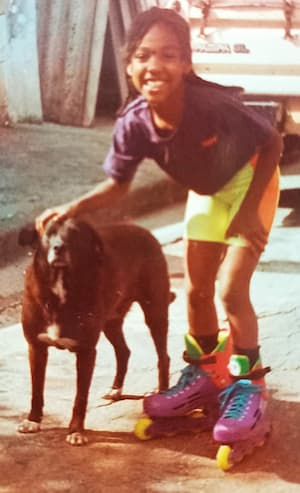

Taís DiasAnalista de QAEu estou trilhando o meu caminho na TI, mais especificamente na área de Garantia de Qualidade.Eu estudei música durante toda a minha infância e juventude e, agora, aos 30 e muitos anos , resolvi expandir meus conhecimentos e buscar novos horizontes em outra área. Minha querida mãe sempre me falou que "a música é uma linguagem universal" e que "a tecnologia é a linguagem do futuro" (e do presente!). Sob esta influência, resolvi migrar para a área da tecnologia. Não tem sido fácil, mas gosto de desafios e estou muito animada com tudo o que tenho aprendido e com todas as inúmeras coisas que vou aprender. |
Meus HobbiesEu gosto muito de ouvir música, assistir a filmes e documentários, ler, passear com meu cachorrinho, viajar, criar coisas novas, mas, sem dúvida, o meu hobby favorito é andar de patins. Para mim, é uma daquelas coisas que proporcionam uma sensação incrível de liberdade, mas com os pés bem firmes no chão. Eu amo animais e aprendi com os meus pais! Minha mãe não podia ver um animal em apuros que ela ajudava. Foi assim que começou a resgatar e doar. Não foram muitos, mas foram significativos e grandes exemplos, que ensinaram à minha irmã e a mim. Esta foto, de meados dos anos 90, representa duas das minhas maiores paixões: patins e animais. Agora há também a tecnologia! |
 |
Formação
Educação:
[2022 – 2025]
Curso Superior de Tecnologia em Análise e Desenvolvimento de Sistemas
Centro Universitário Internacional - UNINTER
[Programação Web, Python, Banco de Dados (MySQL),
Metodologias Ágeis e mais]
[2021 – 2022]
Bootcamp de Programação
CodeMaster
[HTML, CSS, Banco de Dados (MySQL), C, JavaScript]
[2007 – 2012]
Licenciatura em Educação Artística com Habilitação em Música
Faculdade Santa Marcelina - FASM
Cursos:
HTML5 - OneBitCode
CSS3 - OneBitCode
Introdução ao Teste de Software - Júlio Lima
Idiomas:
| Básico | Intermed. | Fluente | |
|---|---|---|---|
| Português | X | ||
| Inglês | X | ||
| Francês | X |
Habilidades:
Portfólio
Aqui estão alguns dos meus trabalhos: